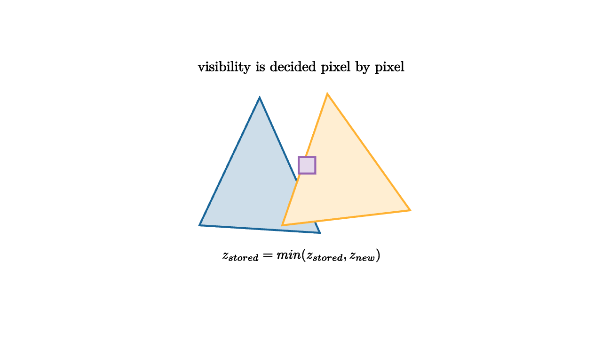

Z-Buffers Remember The Nearest Surface
When two triangles cover the same pixel, the renderer must choose which one is visible. A painter could draw far objects first and near objects later. That works for many flat illustrations, but 3D scenes can overlap in tangled ways. Sorting whole triangles is fragile when surfaces intersect or weave through each other.
A z-buffer solves the problem per pixel. Alongside the color buffer, the renderer keeps a depth value for every pixel. When a triangle proposes a color at a pixel, it also proposes a depth. The renderer compares that depth with the stored depth. The nearer sample wins.

source
let soft = |col, amount| lerp(WHITE, col, amount)
mesh diagram = [
fill{soft(BLUE, 0.22)} stroke{BLUE, 2.4} Polygon([1.35l + 0.75d, 0.25r + 0.85d, 0.55l + 0.95u]),
fill{soft(ORANGE, 0.22)} stroke{ORANGE, 2.4} Polygon([0.25l + 0.75d, 1.45r + 0.55d, 0.35r + 1.0u]),
center{0.08r + 0.05u} fill{soft(PURPLE, 0.25)} stroke{PURPLE, 2.4} Square(0.22),
center{1.35u} Text("visibility is decided pixel by pixel", 0.68),
center{1.15d} Tex("z_{stored}=\\min(z_{stored},z_{new})", 0.64)
]In many conventions, smaller depth means closer. The algorithm is simple:
1. Clear the color buffer. 2. Clear the depth buffer to a far value. 3. Rasterize triangles. 4. For each covered pixel, compare the new depth to the stored depth. 5. If the new sample is closer, write its color and depth.
The key is that a triangle does not need to know whether it is globally in front of another triangle. Each pixel decides locally.
source
let soft = |col, amount| lerp(WHITE, col, amount)
let Pixel = |pos, label, col| [
center{pos} fill{soft(col, 0.18)} stroke{col, 2} Rect([0.48, 0.32]),
center{pos} Text(label, 0.62)
]
"First"
mesh scene = [
fill{soft(BLUE, 0.22)} stroke{BLUE, 2.4} Polygon([1.35l + 0.75d, 0.25r + 0.85d, 0.55l + 0.95u]),
Pixel(1.15r + 0.55u, "z=.8", BLUE),
center{1.35u} Text("first surface writes color and depth", 0.62)
]
play Fade(0.7)
"Compare"
scene = [
fill{soft(BLUE, 0.22)} stroke{BLUE, 2.4} Polygon([1.35l + 0.75d, 0.25r + 0.85d, 0.55l + 0.95u]),
fill{soft(ORANGE, 0.22)} stroke{ORANGE, 2.4} Polygon([0.25l + 0.75d, 1.45r + 0.55d, 0.35r + 1.0u]),
Pixel(1.15r + 0.55u, "z=.4", ORANGE),
center{1.35u} Text("a closer sample replaces the old one", 0.62)
]
play Trans(1.0)
"Result"
scene = [
fill{soft(BLUE, 0.22)} stroke{BLUE, 2.4} Polygon([1.35l + 0.75d, 0.25r + 0.85d, 0.55l + 0.95u]),
fill{soft(ORANGE, 0.32)} stroke{ORANGE, 2.6} Polygon([0.25l + 0.75d, 1.45r + 0.55d, 0.35r + 1.0u]),
center{0.08r + 0.05u} fill{soft(ORANGE, 0.25)} stroke{ORANGE, 2.4} Square(0.22),
center{1.35u} Text("the stored nearest surface colors the pixel", 0.62)
]
play Trans(1.0)The z value itself is interpolated across the triangle, often using barycentric coordinates. Each vertex has a depth after transformation and projection. For a pixel inside the triangle, the pipeline computes the depth that belongs to that point on the triangle surface. That interpolated depth is compared against the buffer.
Depth precision matters. Perspective projection distributes depth values unevenly, usually giving more precision near the camera and less far away. If two surfaces are extremely close, the depth buffer may struggle to distinguish them. The visual artifact is called z-fighting: pixels flicker between surfaces because their stored depths are nearly equal.
Near and far clip planes affect this precision. A very small near plane combined with a very large far plane spreads depth too thinly. Graphics programmers often improve stability by moving the near plane farther out, tightening the far plane, or using depth formats and projection techniques suited to the scene.
Transparency complicates the story because a transparent surface may need to contribute color while still revealing what lies behind it. Many renderers draw opaque geometry with the z-buffer first, then handle transparent objects with sorting or specialized order-independent transparency methods.
For opaque surfaces, the z-buffer is one of graphics' most effective pieces of bookkeeping. It remembers the nearest surface per pixel, allowing triangles to arrive in almost any order. The image becomes a table of local visibility decisions.
Early rejection
Depth testing can also save work. If a fragment is farther than the depth already stored for that pixel, the renderer can discard it before running expensive shading. Hardware techniques often called early-z take advantage of this. Drawing large opaque objects in a helpful order can reduce the number of fragments that reach the shader.
This is a practical example of an algorithmic theme: cheap tests should reject work before expensive tests run. The z-buffer is both a correctness tool and a performance tool.
Reversed depth
Some engines use a reversed depth buffer, where far and near are mapped in the opposite direction, often with a floating-point depth format. This can improve precision distribution for large scenes. The visible idea remains the same: each pixel stores the best depth seen so far according to the chosen comparison rule.
The exact convention can change. The mental model should be "remember the nearest acceptable surface," with projection and hardware settings deciding how that nearest value is encoded.
Depth as an image
Depth buffers are also useful as textures. A shadow map stores depth from the light's point of view. To shade a point, the renderer compares that point's light-space depth against the shadow map. If something closer to the light already occupies that direction, the point is in shadow.
Screen-space effects also read depth. Ambient occlusion estimates nearby blocking geometry. Fog can grow with distance. Edge outlines can detect sudden depth changes. The depth buffer begins as visibility bookkeeping and becomes a geometric image the rest of the renderer can query.
The z-buffer is a quiet idea with large consequences. It lets triangles be processed locally, supports performance shortcuts, and creates a per-pixel memory of scene geometry.